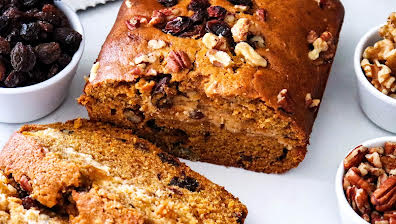

Banana bread

Description
Easy recipe for cold days or hot days and very fun to make with the kids.
Enjoyable, sweet and delicios is what it can describe it.
Ingredients
- 5 small ripe spotted bananas, divided (about 4 1/2 ounces each)
- 2 large eggs, at room temperature
- 1/2 cup plus 1 tablespoon packed dark brown sugar, divided
- 2 cups self rising flour
Steps in making
- Gather all ingredients.
- Preheat the oven to 350 degrees F (175 degrees C). Line a 9- x 5-inch loaf pan with parchment paper, leaving a 2-inch overhang on all sides; set aside.
- Mash 4 of the bananas in a large bowl using a fork until mostly smooth to equal 1 1/2 cups. Add eggs and 1/2 cup brown sugar; stir until combined.
- Add flour to the banana mixture; stir until just combined and no dry streaks remain, scraping down the sides of the bowl as needed.
- Pour batter into the prepared loaf pan and spread into an even layer.
- Bake in the preheated oven until a wooden pick inserted in the center comes out with a few moist crumbs, 50 to 55 minutes. Let cool in pan on a wire rack for 15 minutes; using parchment paper overhang.
- Remove loaf from pan and slice; serve warm. Enjoy!